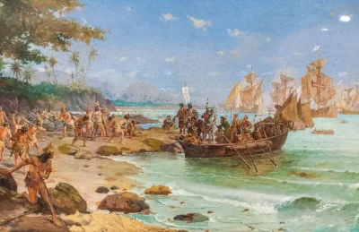

Exploração:
"Os portugueses seguiram mais alguns dias explorando a costa brasileira, e no dia 26 de abril, um domingo, celebraram a primeira missa no Brasil, realizada pelo frei Henrique de Coimbra.
Depois, os comandantes da expedição decidiram enviar uma embarcação para Portugal com a notícia do achamento da nova terra. Pero Vaz de Caminha também foi nomeado para relatar, com detalhes, as novidades das terras encontradas.
No dia 2 de maio, a expedição de Cabral partiu do Brasil em direção à Índia. O rei português, d. Manoel I, ficou sabendo da notícia do achamento da nova terra ainda em 1500. Apesar disso, o Brasil ficou em segundo plano, uma vez que a prioridade portuguesa, naquele momento, era continuar com o comércio na Índia.
Foi somente a partir da década de 1530, com o declínio do comércio de especiarias e as invasões francesas, é que os portugueses iniciaram uma política de colonização. Nesse primeiro momento, eles implantaram algumas feitorias no litoral brasileiro e passaram a explorar o pau-brasil."
